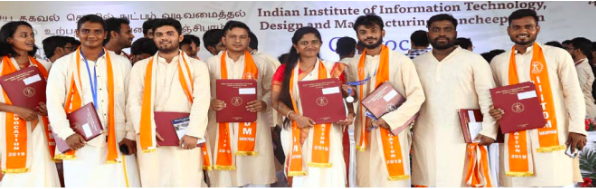

Instructions
- Registration of the
Graduands will be from 10 AM on 09/09/2022
(FRIDAY). Registrations
shall be allowed till 4PM. All Graduands who wish to receive their degrees in person on the
Dais should mandatorily report for
the rehearsal which is planned on 9th September 2022 at 5 PM. Registration Desk would be near
Academic
Block. Graduands may collect their stoles & other coupons from representatives at the registration desk. Post
registration, Graduands shall assemble in the Convocation Hall latest by 4.30 PM for the
rehearsal.
- Attending the
Rehearsal is mandatory in view of the procedures such
as the protocol of
degree receipt from the Chief Guest, Director and Board members, order in which the graduands movement shall
happen
around the stage, etc. Any miss would only alter the highly sequenced process which should happen without
any announcements during the convocation and end up in confusion with the degree stack. Graduands who
fail to attend the rehearsal will not be able to collect the degrees on the Convocation Dais and may
collect
the same from Academic Office after the convocation is over. Rehearsal Protocol is IMPORTANT to ensure
synchronization with the Degree Stack which would contain the degrees / awards of only registered
graduands, and any order violation would upset the Degree Stack. Cooperation of graduands is requested in
this regard.
- Graduands are requested to
be seated in their allotted chairs (Graduand Name and Roll
Nos. sticker shall be pasted on the chairs) for the rehearsal on 9th September (assemble from 4
PM) and for the convocation on
10th September (assemble from 1PM, latest by 2.15 PM). No registered graduands would be allowed to
enter
the convocation area after the cutoff time (2.15 PM).
- All Graduands are
requested to be dressed Formally befitting the academic occasion as
listed below. Stoles will be issued by the Institute and Graduands should make their
arrangements for the dress as per the
code below. Graduands not following the dress code will not be allowed to receive the degree on the dais.
- Girls: Cream colour salwar/saree
- Boys: Cream colour kurta + Pyjama or Cream colour Kurta + Dhoti
Model Photo is as below:

DO's & DONT's
- The Institute Convocation
is a pious and academic event with established protocol to
be followed over the
years. All graduands are requested to cooperate with the institute in making this event a successful one and in
line with the tradition.
- Graduands are requested
not to venture out of their seats beyond the cutoff time of
2.15 PM. You may
carry water bottles with you if required. In case of any assistance student volunteers around the area may be
approached.
- As mentioned the event is
an extremely pious one and hence indiscriminate clapping /
whistling / shouting
/ howling etc. during the Award of Degrees shall not be entertained. You are our past students and valued
ALMA matter, hence we desist from the violation clause! Your cooperation in this regard contributes to your
institute's event success.
- Appreciation in the form
of gentle clapping for meritorious graduands (awardees)
during Prize Distribution
only would be allowed to be in line with the pious nature of the event. We completely appreciate the fact that
each and every degree recipient is a special one for the institute and all stakeholders. However to maintain the
tradition and the decorum of the event amidst the esteemed guests inclusive of you and your parents, gentle
clapping for receipient of Prizes would be allowed.
- You may inform your
parents /friends not to approach the dais as you receive the
degree / awards for any
sort of photography. Institute photography team would be in place and each graduands photo would be
recorded and passed on by the Administration in soft form after the convocation. It is also requested to pass
on to your parents and other guests that clapping would be as per our earlier guideline in (4) above.
P.S: Please do appreciate the fact that this is one of the showcase occasions of the institute
in the midst of
external audience such as the Press, Board and Senate members, esteemed Chief Guest, Chairman, Director,
and distinguished guests and our esteemed guest and; howling / whistling / indiscriminate clapping and other
forms of disturbances, etc. would present the institute to the external world in a distasteful manner. Hence we
hope that all graduands would appreciate the guidelines in the right earnest and adhere to them to make the
event a successful one as a model for subsequent batches to follow.
Let us also be mindful of the fact that traditions set during this year is what your immediate juniors would
follow, and now you being our valued ALMA matter / Graduand would set the tone for junior STUDENTS in the
right way. Wishing you the all the best in one of the most important milestones in yours and your parents life.
Let us also be mindful of the fact that traditions set during this year is what your immediate juniors would
follow, and now you being our valued ALMA matter / Graduand would set the tone for junior STUDENTS in the
right way. Wishing you the all the best in one of the most important milestones in yours and your parents life.